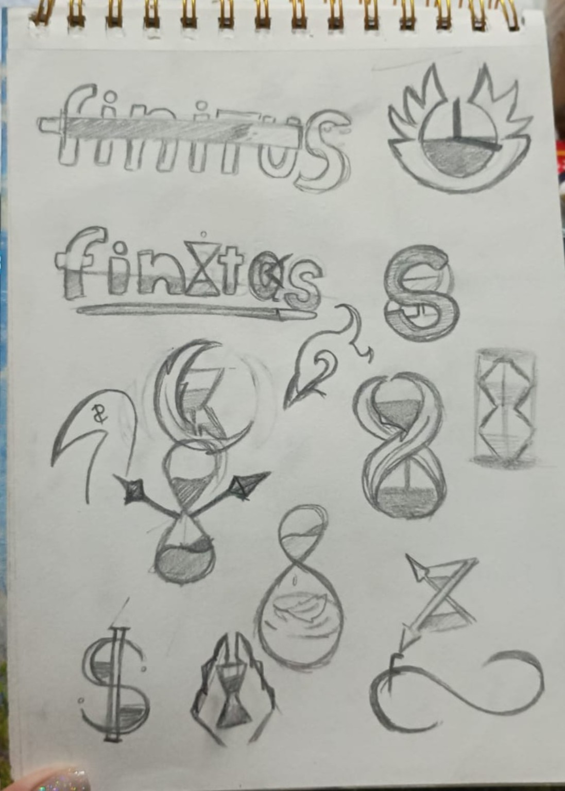
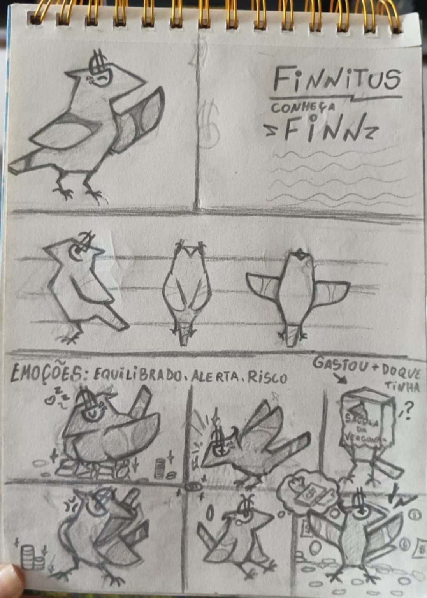
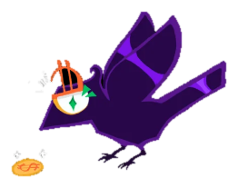

Antes dos pixels,
vieram os rabiscos.
Toda grande ideia começa com um primeiro traço.
Antes de ganhar forma como aplicativo, o Finnitus passou por páginas de caderno, testes de símbolos, diferentes desenhos e muitas tentativas. Aqui estão os registros reais dessa construção.


À IDENTIDADE FINNITUS
A marca começou
com possibilidades.
Nas primeiras páginas, o nome Finnitus aparece ao lado de símbolos financeiros, ampulhetas e formas geométricas. São tentativas de encontrar uma linguagem visual para a ideia do aplicativo.
Em vez de pular diretamente para uma logo pronta, esses estudos mostram o caminho: experimentar, comparar e refinar.
E então surgiu o Finn.
Um corvo com formas marcantes e expressões próprias. Nos desenhos, ele começa a ganhar movimentos, diferentes ângulos e emoções ligadas ao cotidiano financeiro.
O personagem sendo explorado por vários ângulos.
As emoções ajudam a aproximar o Finn de situações reais.
Do papel
para a tela.
Depois dos esboços, o Finn começou a ganhar contornos digitais e uma paleta de cores. Este registro mostra uma das etapas de construção do personagem no Ibis Paint.
Os primeiros desenhos e a arte digital revelam como uma ideia vai mudando até se aproximar da identidade que vemos hoje no projeto.
Conheça o aplicativo atual
O FINN HOJENO SITE OFICIAL
Cada traço
conta uma parte.
Explore os cinco registros originais. Clique nas imagens para ampliar e navegue pelas setas ou pelo teclado.
De uma ideia no papel
para um aplicativo real.
O Finnitus continua evoluindo. Conheça o aplicativo, suas funcionalidades e as pessoas por trás do projeto.
Explorar o Finnitus